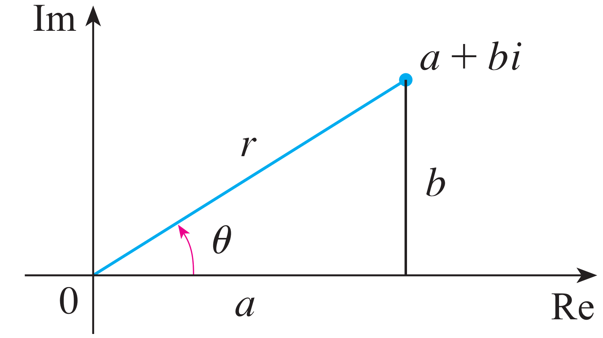
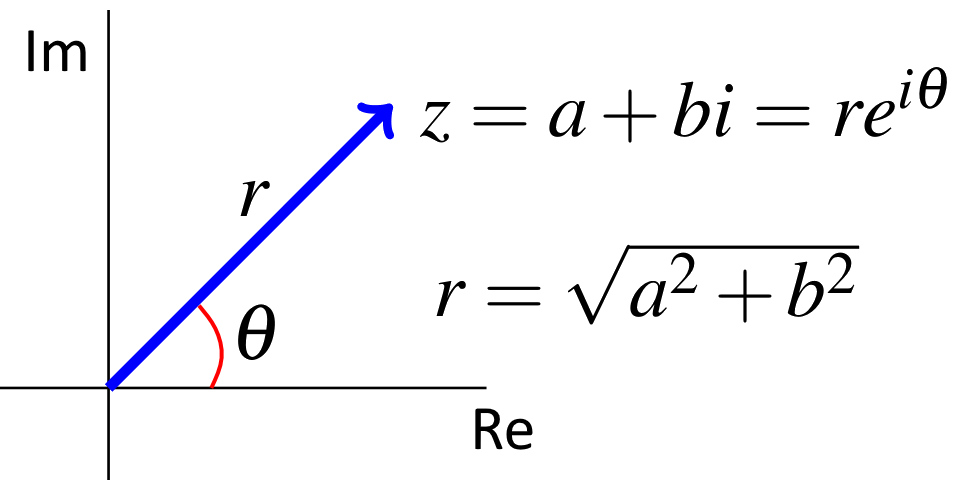

Polar Form¶
Let \(z=a+bi\) be a complex number, and let \(r\) be the distance from \(z\) to the origin, i.e. \(r=|z|=\sqrt{a^2+b^2}\). Moreover, let \(\theta\) represent the angle that the line through \(0\) and \(z\) makes with the positive \(x\)-axis (measured clockwise). See the following diagram. Then \(\theta\) is an angle defined by \(\cos\theta = \dfrac{a}{r}\) and \(\sin\theta=\dfrac{b}{r}\).
{kind=link}
In addition, we know that any complex number \(z=a+b\,i\) can be considered as a point \((a,b)\). Any such point can be represented by polar coordinates \((r,\theta)\) with \(r\geq 0\).
In other words \(\theta\) is an angle such that \(a = r\,\cos(\theta)\) and \(b = r\,\sin(\theta)\). Therefore,
Polar Form of a Complex Number: Let \(z\) be a complex number with \(|z|=r\) and \(\arg z=\theta\). Then
is called a polar form of \(z\).
We have
Thus, we can write any complex number in the form
\[z=r\left(\cos(\theta)+i\,\sin(\theta)\right)\]
where \(\theta\) is the argument of \(z\).
Euler’s formula: The identity
called Euler’s formula.
The polar form of the complex number \(z = a+b\,i = r(\cos(\theta) +i\sin(\theta) )\) is for convenience written as:
\[z =r\,e^{i\theta}\]
where \(\theta\) is the argument of \(z\).
Example: Find the polar form for the number \(z=1\).
Solution: To convert \(z\) to polar form, we need to find \(r\) and \(\theta\) so that \(1=re^{i\theta}\).
Now \(r=|z|=\sqrt{1^2}=1\), and \(\theta=0\) is an argument for \(z=1\). However, we may also write
Since sine and cosine have periodicity \(2\pi\), we may add (or subtract) multiples of \(2\pi\) to any argument.
This angle \(\theta\) is referred as the argument of \(z\) and is denoted \(\arg(z)\). Note that is not unique; any two arguments of differ by an integer multiple of \(2\pi\). Therefore, we often speak of the principal argument of \(z\). This is the unique angle \(\theta \in (- \pi , \pi]\) such that $\(\begin{aligned} \begin{cases} \cos(\theta)=\dfrac{a}{r},\\ \sin(\theta)=\dfrac{b}{r}. \end{cases}\end{aligned}\)$
Principal Argument: Let \(z\) be a complex number with \(|z|=r\). The \textbf{principal argument} of \(z\) is the unique angle \(\theta=\arg (z)\) (measured in radians) such that
Polar Form of a Complex Number: Let \(z = a+b\,i\) be a complex number. Then the polar form of \(z\) is written as $\(z = r\,e^{i\theta}\)\( where \)r = \sqrt{a^2+b^2}\( and \)\theta\( is the (principal) argument of \)z$.
{kind=link}
Example: Convert the number \(z = -2 +2\sqrt{3}i\) to polar form.
Solution: To convert \(z\) to polar form, we need to find \(r\) and \(\theta\) so that \(-2+2\sqrt{3}i=re^{i\theta}\).
Since \(r=|z|\),
There are two approaches to finding an argument, \(\theta\).
One is to graph \(-2+2\sqrt{3}\) in the complex plane.

The triangle sitting on the negative half of the real axis has sides of length \(2\), \(2\sqrt 3\), and \(4\);
you should recognize this as a right triangle whose other two angles measure \(\dfrac{\pi}{3}\) and \(\dfrac{\pi}{6}\).
From this, we see that \(\theta=\dfrac{2\pi}{3}\) is an argument of \(z\).
Therefore, \(z\) can be written in polar form as \(z=4e^{i(2\pi/3)}.\)
The other approach to finding an argument, \(\theta\), for \(z=-2+2\sqrt{3}i\) is as follows. We have already calculated \(|z|=r=4\). By definition, \(\theta\) is an angle satisfying
By graphing the point \((-\frac{1}{2}, \frac{\sqrt{3}}{2})\), we again determine that \(\theta=\frac{2\pi}{3}\), and thus \(z\) can be written in polar form as \(z=4e^{i(2\pi/3)}.\)
Example:
a. Let \(z = -\frac{1}{2}+\frac{\sqrt{3}}{2}i\) be a complex number. Write \(z\) in the polar form \(z =r\,e^{i\theta}\).
b. Let \(z = 2\,e^{i\pi/6}\). Write \(z\) in the standard (Cartesian) form \(z = a+b\,i\).
Solution:
a. We have \(r=|z|=\sqrt{\left(-\frac{1}{2}\right)^2+\left(\frac{\sqrt{3}}{2}\right)^2}=\sqrt{\frac{1}{4}+\frac{3}{4}}=1\), and
We know that \(\theta \in (- \pi , \pi]\); therefore, \(\theta=\frac{2\pi}{3}\), and \(z = e^{i\,2\pi/3}\).
b. We have
Therefore, \(z=\sqrt{3}+i\).
Note that you could directly write down the answer as
Refrences¶
Kuttler, Kenneth. “A First Course in Linear Algebra (Lyryx).” (2018).
Nicholson, W. Keith. “Linear Algebra with Applications (Lyryx).” (2018).
Stewart, James, Daniel K. Clegg, and Saleem Watson. Calculus: early transcendentals. Cengage Learning, 2020.